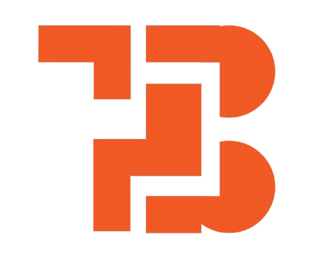
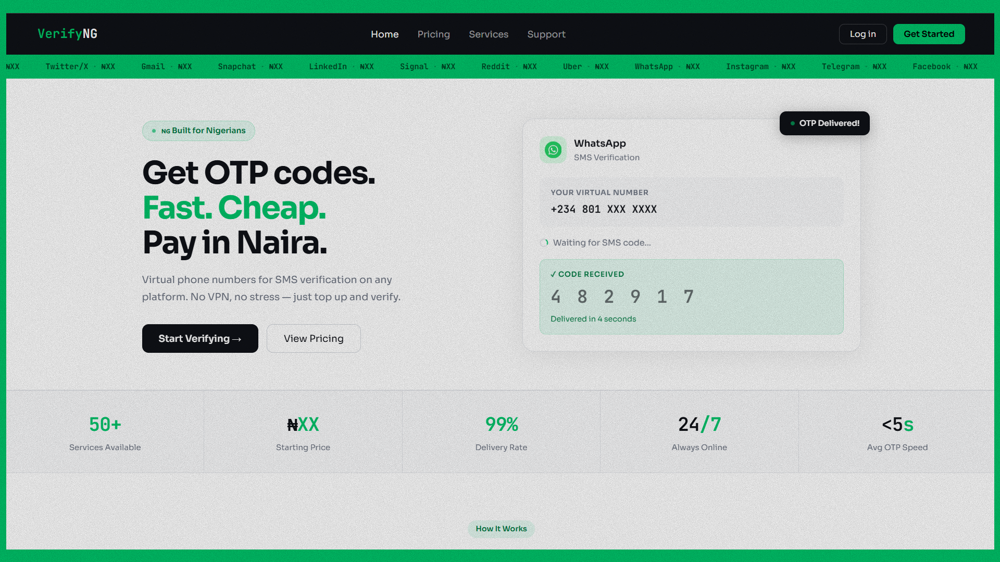
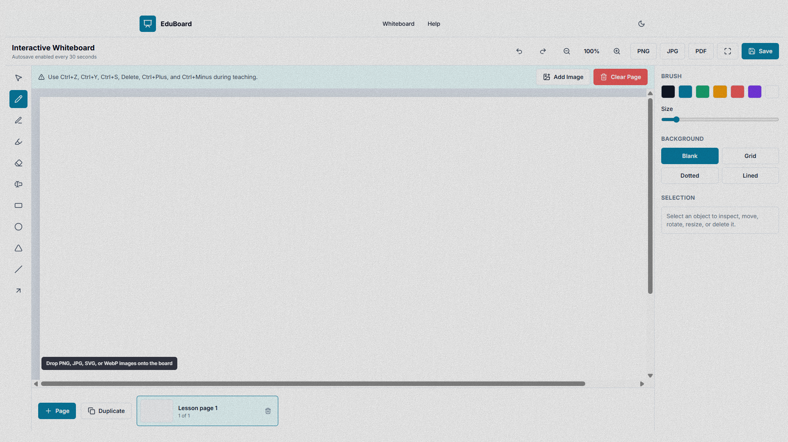
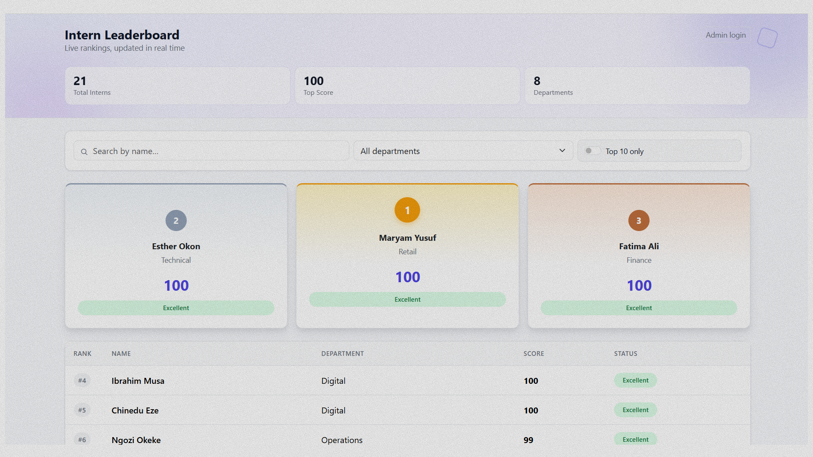
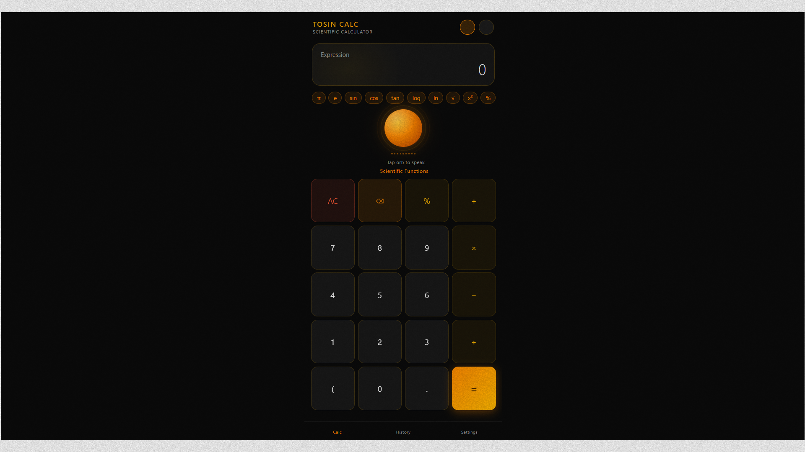

Full Stack Development
Scalable web applications, APIs, databases, and dependable integrations from idea to launch.
→Oluwatosin Adelakun — Full Stack Developer
I build modern full-stack web applications, connecting intuitive interfaces, reliable backends, databases, and APIs to turn ideas into scalable products.

What I do
Scalable web applications, APIs, databases, and dependable integrations from idea to launch.
→Responsive, accessible interfaces with purposeful visual systems and polished interactions.
→Practical MVPs, dashboards, landing pages, and product experiences built for growth.
→Performance improvements, website maintenance, and support that keeps your product moving.
→Selected work
From fintech platforms to learning tools, each project is built to turn complex ideas into practical digital experiences that work.

Next.js · Supabase · 5SIM API · Korapay
Virtual phone number marketplace for global OTP verification.

Next.js · Fabric.js · TypeScript
Interactive whiteboard for teaching, drawing, and learning.

React · JavaScript · Firebase
A real-time leaderboard for managing and ranking student performance.

JavaScript · Speech Synthesis · Web Speech API
Scientific calculator with voice input and spoken results.
About me
I’m Oluwatosin Adelakun, a Full Stack Developer from Nigeria. I build web applications from the interface to the backend, combining clean engineering with thoughtful design to create products that are practical, reliable, and easy to use.
Get in touch →Tools I use
Have something to build?